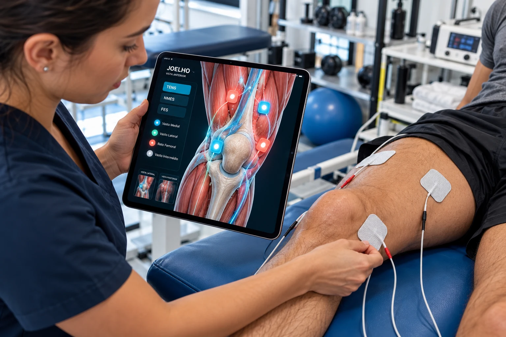

Em correntes bifásicas simétricas equilibradas (o padrão clínico da vasta maioria dos aparelhos modernos de TENS e NMES), cada elétrodo atua ciclicamente como cátodo ativo durante 50% do tempo de pulso. Não ocorre acumulação eletrolítica líquida sob a pele (Johnson 2007, PMC4589923; PMC5683854). A identificação (+) e (-) serve para orientar os canais do equipamento; a polaridade ativa fixa só é determinante em correntes monofásicas ou bifásicas assimétricas desequilibradas.
Extensão do Joelho & VMO (Knee Extension)
Ativação motora seletiva do Vasto Medial Oblíquo e Reto Femoral

Colocação com Elétrodos Autoadesivos & Cabos de Derivação
A patela é marcada com um círculo distalmente. Os elétrodos autoadesivos são colocados ao longo da coxa. O elétrodo proximal fica bem alto e lateral. O elétrodo distal é colocado na linha média ou ligeiramente medial.
⚠️ Aviso de Segurança: Uma colocação demasiado medial do elétrodo distal pode provocar uma cãibra dolorosa no Vasto Medial. Se isso ocorrer, mantenha o elétrodo distal na linha média.
Referência Clínica: Nussbaum EL et al. (2017) · Pontos Motores: Baker LL et al. (2000) PMC5683854 (Nussbaum et al.) ↗